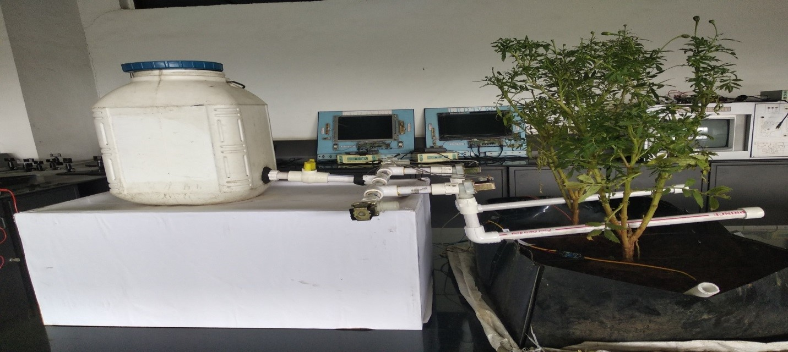
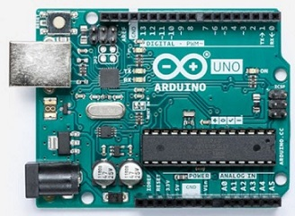
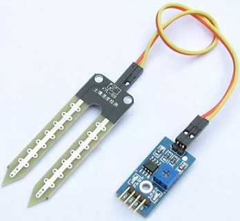
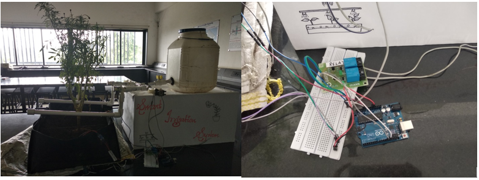

Vishal Soni
Aditi Chaplot
Smit Parmar
Farming depends on the monsoons which have not enough water source. To overcome this problem, the irrigation system is employed in the field of agriculture.
Organic Farming team identified the problem in MPKV Rahuri visit, in the polyhouse irrigation method. MPKV were having 80 % irrigation in the playhouses but there was manual irrigation method used .
So students decided to implement sensor based irrigation with low cost.
In this system, based on the soil type, the water will be provided to the agricultural field.
The Arduino UNO is one of the most used microcontrollers in the industry. It is very easy to handle, convenient, and use.
The coding of this microcontroller is very simple. The program of this microcontroller is considered as unstable due to the flash memory technology.
The applications of this microcontroller involve a wide range of applications like security, home appliances, remote sensors, and industrial automation.
This microcontroller has the ability to be joined on the internet and perform as a server too.

Soil moisture sensor is one kind of sensor used to detect the soil moisture content. This sensor has two outputs like the analog output as well as the digital output.
The digital o/p is permanent and the analog o/p threshold can be changed. The working principle of soil moisture sensor is open & short circuit concept.
Here the LED gives an indication when the output is high or low.

When the condition of the soil is dried up, the flow of current will not flow through it. So it works like an open circuit.
Therefore the o/p will be maximized. When the soil condition is soaked, the flow of current pass from one terminal to the other. So it works like a closed circuit.
Therefore the o/p will be zero. Here sensor is coated with platinum, and anti-rust to make higher efficiency as well as long life.
The sensing range is also high which will pay for the farmer at a minimum cost.
In the Farm soilsensors are used like soil moisture. The information received from the sensors is sent to the Database folder through the Android device.
In the control section, the system is activated using the application, this is finished using the ON/OFF buttons in the application. Also, this system is automatically activated when the soil moisture is low,
the relay is switched ON based on the moisture content.
The application has a feature like taking some time from the user and water the agriculture field when the time comes. In this system, there is a switch used to turn off the water supply if the system fails.
Other parameters such as the moisture sensor demonstrate the threshold price and the level of water in the soil.

FUTURE SCOPE
Further, this project can be enhanced by designing this system for large acres of soil.
Also, this project can be incorporated to make sure the value of the soil and the expansion of harvest in each soil.
The microcontroller and sensors are successfully interfaced and wireless communication is attained between a variety of nodes.